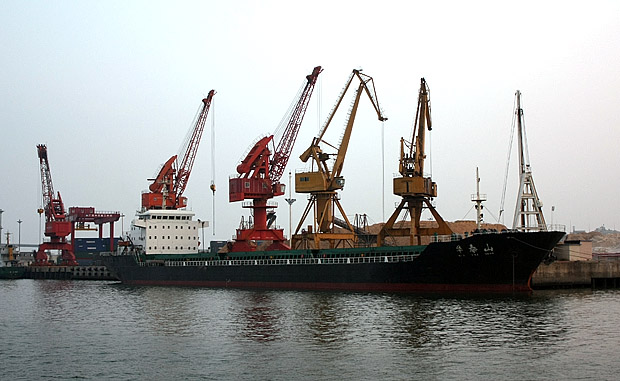
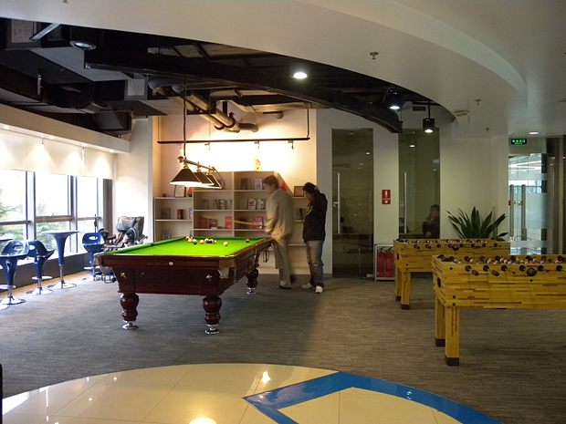
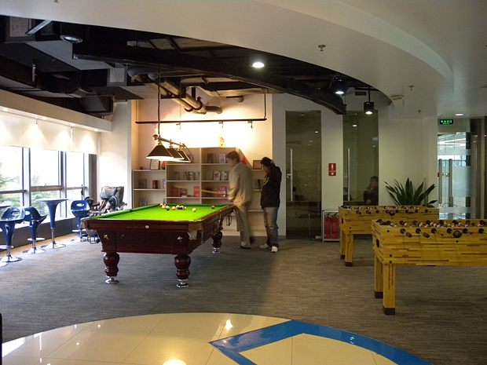
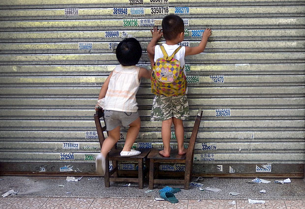

《2012》故事虽然不咋地，不过光看效果还是足够过瘾了。我觉得看灾难片的最大好处，就跟看大海，看高山这些一样。让你觉得人生如果都是在为一些买房，买车的事忙活，实在是太没意思了。想想人工降雪，人工降雨，人工干预天气的事已都是习以为常，不知道大自然有没有一个神灵在窃笑。
船
湛江是国内第一批沿海开放城市，但基本是这一批城市里发展最慢的一个。诺大的一个深水良港，没有物尽其用实在是遗憾。除了领导等很多的原因，当然也有一条是因为这之前一直是军港。虽然住了那么多年，这次回去还是第一次回去游军港。（以下图片网络上均可找到图片资料，不属机密，阿弥陀佛。）
9字头，新型登陆舰

998，“昆仑山”号大型船坞登陆舰，我国海军目前最大、最先进的现代化大型登陆舰。
训练中的水兵
1字头 ，导弹驱逐舰

不大热闹的货船

渡轮，岛上的人以前只能靠渡轮过海，现在多了一道海湾大桥。

红嘴鸥一号，我们的游船，因每年冬天飞来湛江过冬的红嘴鸥得名。
湛江留影（一）

 以上背景基本都为湛江特呈岛，岛很小，海水也不蓝，沙滩也不够幼白。但是有着许多景区没有的优点，就是人很少，很休闲，消费很便宜，因为开张不久，也许以后就没那么划算了。有很多小螃蟹可抓，还有大片红树林，还有很多千奇百怪的海洋小生物。有些看着就起鸡皮疙瘩，还是不要放图片的好。更多图片可偶尔看看我们的相册：http://www.flickr.com/photos/coletree/
以上背景基本都为湛江特呈岛，岛很小，海水也不蓝，沙滩也不够幼白。但是有着许多景区没有的优点，就是人很少，很休闲，消费很便宜，因为开张不久，也许以后就没那么划算了。有很多小螃蟹可抓，还有大片红树林，还有很多千奇百怪的海洋小生物。有些看着就起鸡皮疙瘩，还是不要放图片的好。更多图片可偶尔看看我们的相册：http://www.flickr.com/photos/coletree/
棋
 差点因为名字错过一部不错的片子。 英文名很长“The World Is Big and Salvation Lurks around the Corner”，中文译作《在世界转角遇见爱》。开始以为是模仿当初的那部日本电影《在世界中心呼唤爱》，很怀疑地想着简单看看，原来那个片就不是很喜欢。看了几分钟，便觉得这部保加利亚电影有我喜欢的气质，苦难却不渲染，灵动而温暖。 下双陆棋的爷爷，带车祸后失去父母失去记忆的外孙重回故里。那些不堪的，幸福的，痛苦的，温暖的记忆也被一一拾回。祖孙俩骑着双人自行车从德国长途跋涉回到保加利亚，高速路口的大牌子上写着“新生的保加利亚”。那一刻，所有的不堪与酸楚都在蓝天白云阳光下灰飞烟灭。 世事如棋，重要的不是扔出好骰子，不是拿到一手好棋，而是不管扔出什么，不管拿到什么样的棋，都能把每一步下成一盘好棋。因为Salvation Lurks around the corner, 大概用柳暗花明又一村来解释更贴切吧。
差点因为名字错过一部不错的片子。 英文名很长“The World Is Big and Salvation Lurks around the Corner”，中文译作《在世界转角遇见爱》。开始以为是模仿当初的那部日本电影《在世界中心呼唤爱》，很怀疑地想着简单看看，原来那个片就不是很喜欢。看了几分钟，便觉得这部保加利亚电影有我喜欢的气质，苦难却不渲染，灵动而温暖。 下双陆棋的爷爷，带车祸后失去父母失去记忆的外孙重回故里。那些不堪的，幸福的，痛苦的，温暖的记忆也被一一拾回。祖孙俩骑着双人自行车从德国长途跋涉回到保加利亚，高速路口的大牌子上写着“新生的保加利亚”。那一刻，所有的不堪与酸楚都在蓝天白云阳光下灰飞烟灭。 世事如棋，重要的不是扔出好骰子，不是拿到一手好棋，而是不管扔出什么，不管拿到什么样的棋，都能把每一步下成一盘好棋。因为Salvation Lurks around the corner, 大概用柳暗花明又一村来解释更贴切吧。


谷歌万圣游
谷歌游已是蓄谋已久，乐乐也是好几次邀请我过去，而且强调要中午过去，可以品尝传说中的Google大餐。可惜一直没找到合适的时机。昨天公司五周年，正好放假一天，逮着机会就去了。  谷歌前台，坐在一侧沙发上等乐乐，偷偷拿出相机拍，没敢正面照。不知从哪儿传出断断续续恐怖的呜呜声，开始还不知道是啥，后来才发现餐厅门口摆着几个万圣节的玩偶，声音就是从那儿发出来的。
谷歌前台，坐在一侧沙发上等乐乐，偷偷拿出相机拍，没敢正面照。不知从哪儿传出断断续续恐怖的呜呜声，开始还不知道是啥，后来才发现餐厅门口摆着几个万圣节的玩偶，声音就是从那儿发出来的。  谷歌健身房，这会儿正是饭点，所以没有人。  谷歌游戏厅。两个人在玩台球。另一侧是一大排零食，有各种巧克力，威化饼，饼干和水果。可惜这会儿每个框里都已经所剩无几。 这样装饰的办公室，让人想起婚礼。据说这里是每个来访游客的必拍地。果然Adwords部门还是女生多啊。听说以前谷歌办公室还有主题日，什么婚纱日，睡衣日之类的，每个人都必须穿结婚礼服或者睡衣来上班。旁边的照片墙上就有以前睡衣日的盛况，为了保护隐私，照片墙就不放上来了:)
谷歌健身房，这会儿正是饭点，所以没有人。  谷歌游戏厅。两个人在玩台球。另一侧是一大排零食，有各种巧克力，威化饼，饼干和水果。可惜这会儿每个框里都已经所剩无几。 这样装饰的办公室，让人想起婚礼。据说这里是每个来访游客的必拍地。果然Adwords部门还是女生多啊。听说以前谷歌办公室还有主题日，什么婚纱日，睡衣日之类的，每个人都必须穿结婚礼服或者睡衣来上班。旁边的照片墙上就有以前睡衣日的盛况，为了保护隐私，照片墙就不放上来了:)  真是来得早不如来得巧，今天正好赶上谷歌食堂为万圣节装饰一新。到处挂着万圣节的玩偶，每张餐桌上都放着一枚南瓜灯。自助餐也是特别丰盛，除了日常的中西餐，各色甜点，水果，沙拉，还有火鸡腿肉和大闸蟹。这趟谷歌万圣游真是不虚此行啊！
真是来得早不如来得巧，今天正好赶上谷歌食堂为万圣节装饰一新。到处挂着万圣节的玩偶，每张餐桌上都放着一枚南瓜灯。自助餐也是特别丰盛，除了日常的中西餐，各色甜点，水果，沙拉，还有火鸡腿肉和大闸蟹。这趟谷歌万圣游真是不虚此行啊！  哈哈，餐桌上的南瓜灯。顺便祝看到这篇日志的朋友万圣节快乐啦！最后要再次感谢乐乐的盛情款待，知道你是经常来这儿潜水的，嘿嘿:)
哈哈，餐桌上的南瓜灯。顺便祝看到这篇日志的朋友万圣节快乐啦！最后要再次感谢乐乐的盛情款待，知道你是经常来这儿潜水的，嘿嘿:)
两小无猜
  国庆在湛江街上晃荡。由于过节，许多小商铺都关门回去探亲访友了，我们特意慕名而去的一家甜品店也是这样，卷闸门都关着。无意间看到一对小朋友，拖着两个小木椅在街上走着。拖到一店铺门前的时候，俩人停了下来，把小木椅摆好，爬上去开始撕贴在卷闸门上的垃圾小广告。这一幕顿时让街上温馨了许多，我们看到的人都心生欢喜，却又不愿意去打扰。看着他们安安静静的，我们心里竟也感到幸福和满足。 因为没有时间盯着这两位到底要撕多少家小广告，所以我看了看周围，没有大人跟着，便在背后给两位小朋友拍了照。不知道他们长大了以后，会不会想念当年的小伙伴呢。
国庆在湛江街上晃荡。由于过节，许多小商铺都关门回去探亲访友了，我们特意慕名而去的一家甜品店也是这样，卷闸门都关着。无意间看到一对小朋友，拖着两个小木椅在街上走着。拖到一店铺门前的时候，俩人停了下来，把小木椅摆好，爬上去开始撕贴在卷闸门上的垃圾小广告。这一幕顿时让街上温馨了许多，我们看到的人都心生欢喜，却又不愿意去打扰。看着他们安安静静的，我们心里竟也感到幸福和满足。 因为没有时间盯着这两位到底要撕多少家小广告，所以我看了看周围，没有大人跟着，便在背后给两位小朋友拍了照。不知道他们长大了以后，会不会想念当年的小伙伴呢。
远方
小时候，总以为自己长大后是浪迹天涯的角色，结果现实生活往往令人无奈。如今，远方于我，虽然始终浪漫，却也始终昂贵得不敢奢想太多，每年能够有机会旅行上三两次，已经知足。大多数时候，只能借着翻看《不去会死》这样的书来构想自己的远方白日梦。 此次去湛江，火车上遇见一对老夫妇，和爸妈差不多年纪，是20年前选择从北京到湛江工作的，现在是警校的公务员。路上聊起他们每年都会自助去很多地方旅行，每次都是坐火车，因为飞机太快，来不及感受路途的遥远就已经从一个地方到了另一个地方。阿姨很兴奋地给我展示他们最近去青海的照片。去的时候在当地租了车，自己开着到处乱逛，很享受那样的怡然自得。看了他们的照片，虽然拍得都不怎么考究，但再好的照片也远远不及亲身经历的感受。 想起去年给爸妈买的那本《老爸老妈去旅行》，想着鼓励他们该是时候放下一切出去走走看看了，其实何尝不是对自己的暗示和期待。爸妈虽然因为老爸工作的缘故也经常会有机会去各个城市，但真正的自助行他们还是很少尝试，而差旅和真正的自助行又怎能相提并论。 至于自己，可能在一段时间内，还是只能维持每年三两次短期旅行这样的频率。但远方会好好的保存在我的梦里，总有一天，我会将它装进行囊，打包成一条长期的状态，随性地游荡。
每个人身体里都住着一只乌鸦
乌鸦高校2/热血高校2
 我得承认，这片子看得我血脉喷张外加花痴泛滥。豆瓣上有人说“没想到我一把年纪还是很爱看古惑美少年打群架 ”。这话也正是我想说的。感谢三池大叔，时隔一年半，在上一部剧情将忘不忘之时，适时推出了第二部。希望接下来还有得看，有得盼。据说这两部是漫画版《热血高校》发生之前的故事，相当于前传，不知道是不是为了拍正传先来点铺垫。
我得承认，这片子看得我血脉喷张外加花痴泛滥。豆瓣上有人说“没想到我一把年纪还是很爱看古惑美少年打群架 ”。这话也正是我想说的。感谢三池大叔，时隔一年半，在上一部剧情将忘不忘之时，适时推出了第二部。希望接下来还有得看，有得盼。据说这两部是漫画版《热血高校》发生之前的故事，相当于前传，不知道是不是为了拍正传先来点铺垫。  小栗旬饰演的源治，只身一人单刀赴会，决心与凤仙学院决一死战。暮然回首，包括芹泽军团在内的铃兰高校众弟兄已经浩浩荡荡出现在身后。那一刻我身体里住着的那只乌鸦也觉醒了。
小栗旬饰演的源治，只身一人单刀赴会，决心与凤仙学院决一死战。暮然回首，包括芹泽军团在内的铃兰高校众弟兄已经浩浩荡荡出现在身后。那一刻我身体里住着的那只乌鸦也觉醒了。  虽说是青春暴力，但纯粹到只用拳头解决问题的暴力也单纯得可爱，比起黑社会的混乱和尔虞我诈，这里简直就是热血的乌托邦。
虽说是青春暴力，但纯粹到只用拳头解决问题的暴力也单纯得可爱，比起黑社会的混乱和尔虞我诈，这里简直就是热血的乌托邦。
菊黄蟹肥秋正浓
中秋去海边，正好赶上一年中吃海鲜的最佳时间。湛江的海鲜据说又是广东境内最新鲜美味又便宜的，路上还看见装着海鲜的大货车运往成都和重庆，没想到四川的海鲜也是从这儿运过去的啊。 在北京还是很少吃海鲜的，自己不会做，去外面吃又贵，所以这次来，当然要大吃特吃了。而且这里除了海鲜，还有无数甜品，小吃诱惑着我，结果是每天都吃得很撑，节前减肥刚有点成效，这么一趟回来，又胖回去了。 中秋那天，买了二十来只螃蟹回家蒸着吃，分了两次来清蒸。才知道原来做螃蟹还是很简单的嘛。只要记得下锅前把蟹盖打开先清洗干净腮和内脏就好了。 
螃蟹时不时就爱吐泡泡

螃蟹生猛，拎起来也一个劲地转，本来想照个正脸的，太不配合了
这只意识到命不久矣，挣脱出来，我们赶紧弄到炉子上烤烤，脚还在那扑腾，太残忍啦

一大锅美味出炉，这颜色太诱人了，马上就要被我们啃得七零八落